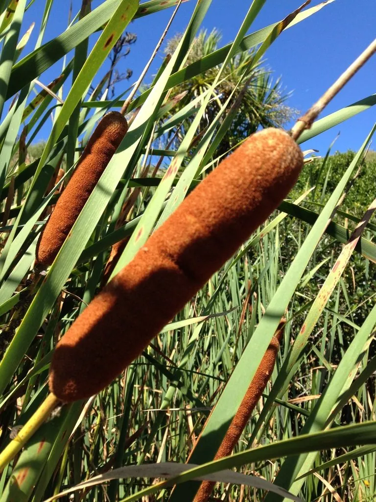

水生植物 · 植物界
香蒲 Typha orientalis

香蒲科多年生水生草本，圆柱形花序像一根根香肠，花粉即蒲黄可入药，嫩芽蒲菜可食，是湿地常见植物。
- 分类
- 门被子植物门纲木兰纲目禾本目科香蒲科属香蒲属
- 栖息环境
- 池塘、河渠、沼泽及湿地浅水处，喜温暖、阳光充足
- 地理分布
- 原产东亚及澳大利亚，中国各地池沼河渠常见，江苏淮安等地栽培蒲菜
- 保护级别
- 暂无评估
物种志
香蒲为香蒲科香蒲属多年生水生草本，株高 1.3–2 米，根状茎白色、横生于泥中。叶片线形，长达 1 米以上，宽 1–2 厘米，基部鞘状抱茎。花单性，雌雄同株，穗状花序圆柱形，雄花序在上、雌花序在下，中间常有裸露的花轴，外形酷似一根香肠，花期 5–8 月，果期 8–10 月。
香蒲原产东亚及澳大利亚，中国各地池沼、河渠和湿地都有分布，喜温暖、阳光充足和浅水环境，耐寒耐湿。花粉即中药蒲黄，有止血化瘀之效；嫩芽和根状茎可食，江苏淮安一带的蒲菜是著名的地方水生蔬菜；叶片可用于编织蒲包、蒲席和草鞋。香蒲的根系能吸收水中养分、净化水质，常被用于人工湿地，成熟果序开裂后散出带毛的种子，可随风飘散。
形态与习性
- 株高1.3–2 米，叶长可达 1 米以上
- 花期5–8 月，圆柱形穗状花序
- 果期8–10 月，果序开裂散种
- 光照喜充足阳光
- 水分水深 10–50 厘米的浅水为宜
- 土壤富含腐殖质的沼泽土或塘泥
- 繁殖根状茎分株繁殖
- 主要用途蒲菜食用、蒲黄入药、叶片编织、湿地净化
趣味知识
- 香蒲的圆柱形花序由上部雄花和下部雌花组成，外形像一根香肠。
- 香蒲花粉即中药蒲黄，有止血化瘀的功效。
- 嫩芽和根状茎可食，江苏淮安的蒲菜是著名的水生蔬菜。
- 香蒲叶片纤维强韧，可编织蒲包、蒲席和草鞋。